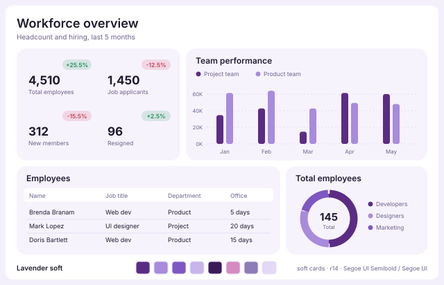
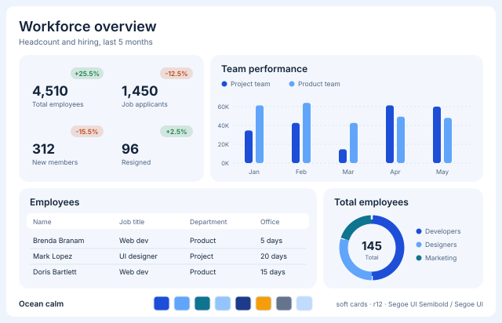
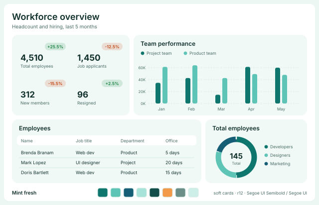
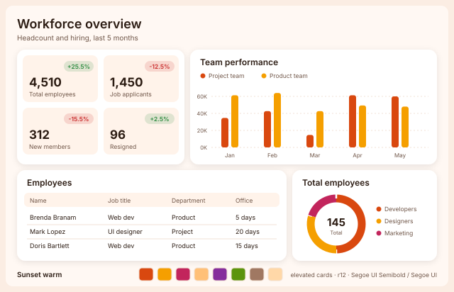
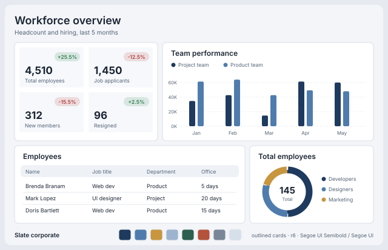
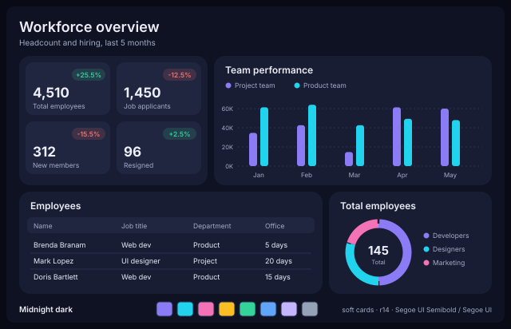
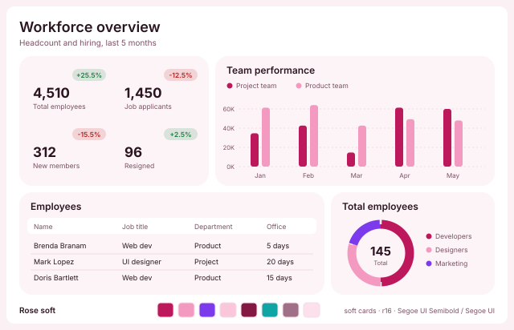
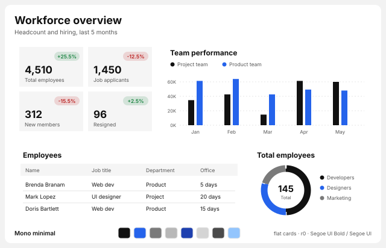
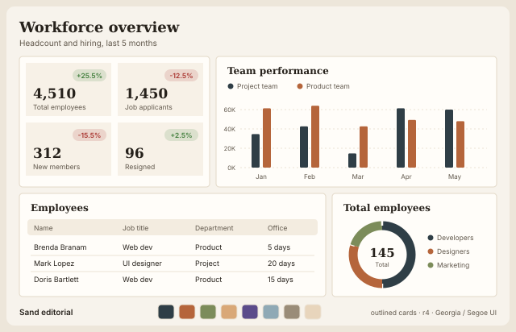

Power BI theme presets (9)

lavender-soft · Deep purple with lavender tiles on a white canvas; rounded, borderless, airy. HR and people dashboards.
ocean-calm · Confident blue on pale blue tiles; the safe default for finance, sales and ops reports.
mint-fresh · Teal and mint with soft green tiles; health, sustainability, operations.
sunset-warm · Coral and amber on a warm off-white canvas with lifted white cards; retail, hospitality, marketing.
slate-corporate · Navy and steel on a grey canvas with crisp outlined white cards; board and finance packs.
midnight-dark · Dark navy canvas, violet and cyan series, soft raised tiles; wallboards and night-mode reports.
rose-soft · Raspberry and blush tiles on white; beauty, wellness, community and customer reports.
mono-minimal · Swiss-style black, greys and one blue accent; square corners, no chrome, maximum data-ink.
sand-editorial · Serif headings, warm sand canvas, ink and terracotta series; narrative and board-story pages.